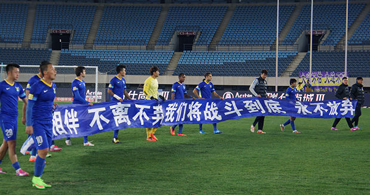

大连阿尔滨：门外汉的悲哀
在中超联赛里，有数支球队堪称保级狂魔，这其中包括河南建业、杭州绿城、长春亚泰，乃至有时被视为夺冠热门的天津泰达，这一两年中，辽宁宏运也脱去了青涩，加入到保级狂魔这一行列里。保级狂魔的最大特征是，成绩好时，他们能恰到好处的输给一些弱队，比如辽宁，有时在士气高涨且有主场优势时，输给保级狂魔中的队友们，当保级狂魔们遇到困难时，那些曾战胜过他们的"其他保级狂魔队"，也能恰到好处的输球。假球黑哨打的这么紧，联赛中也没有人敢打假球，但恰到好处的赢球和输球，也在规则允许之内。
大连阿尔打入中超不过三年，赵阳明又把对手标为恒大，显然不属于保级狂魔军团中的一员；大连足球也缺少保级经验，他们为此付出了巨大的代价。在联赛最后三轮，他们迎战保级狂魔队伍中的辽宁与天津，最后一轮还面对本赛季受保级困扰、赛前却已保级成功的上海申鑫。
这三战中，阿尔滨每场比赛都经历了落后、扳平，其中两场在扳平的情况下又被对手打入致胜球，三场比赛战况激烈，显然，大连阿尔滨并未被计入保级狂魔这一阵营，从场上激烈的对抗就可以知道，没有任何人希望阿尔滨留在中超。若有一道选择题，在河南、长春、杭州这些球队外加大连阿尔滨中做一个降级选择，大部分人都会选择阿尔滨。
赵阳明显然知道大连球迷的诉求，大连球迷希望看到大连足球重回争冠行列，球迷也希望看到赵阳明重塑大连足球，即有球迷的期待，又有一股强烈的使命感，在这种基础上，赵阳明希望自己成为大连足球的领路人。但不争的事实是，至今建队历史不过五年的阿尔滨，在大连足球中根本没有地位。大连足球的人才宝库中，能留给阿尔滨挖掘的并不多，在三年中超征战中，阿尔滨其实用心经营，一批连籍的九零后小将在球队中慢慢受到了锻炼，并渐成球队主力，象晋鹏翔这种在杭州绿城时就成长为主力的球员，在阿尔滨已算"老将"。但阿尔滨缺少经验，他们缺少一名经验丰富的中后卫和后腰，这种球员往往是球队的领袖；若缺少后腰和中后卫老将，那就应该有一位强大的门将，他也能成为球队领袖。陈涛和于大宝，被视为阿尔滨队内最大牌的国内球员，是赵阳明抗衡恒大的利器，但这两人并不是传统意义上的球队领袖，在阿尔滨的保级过程中，两人的作用并不明显。
恒大最成功的一点是，他们拥有一个高效的管理团队，这个管理团队在恒大还处于中甲时，就买来了穆里奇，这个管理团队分工明细。球探、经理、医疗甚至是后勤保障，都有后备人员，看看恒大的精致海报就知道他们有多用心。赵阳明是一个具有江湖气的商业人士，他对于恒大的成功可能只有一个感觉，我有钱，大连有的是足球人，我搞的定。这恰恰证明了一点，赵阳明是一个热爱足球的足球门外汉。他并不了解球队的真正运作，再加上阿尔滨集团在本年度遭遇到经济危机，因此球队突然陷入数重危机的夹击，但时至最后一轮，阿尔滨仍不缺少斗志，问题是，这支球队的管理一团混乱……